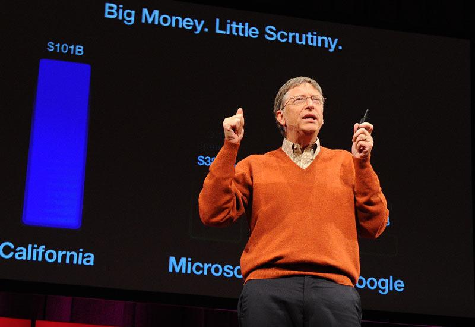

Gates devised an algorithm for pancake sorting as a solution to one of a series of unsolved problems presented in
a combinatorics class by professor Harry Lewis. His solution held the record as the fastest version for over 30 years,
and its successor is faster by only 2%. His solution was formalized and published in collaboration with Harvard computer
scientist Christos Papadimitriou.[46]Gates remained in contact with Paul Allen and joined him at Honeywell during the summer of 1974.
In 1975, the MITS Altair 8800 was released based on the Intel 8080 CPU, and Gates and Allen saw the opportunity to start their
own computer software company. Gates dropped out of Harvard that same year. His parents were supportive of him after seeing how much
he wanted to start his own company. He explained his decision to leave Harvard: "if things hadn't worked out, I could always go back to school.
I was officially on leave."
Copyright © 2563. By Teerapat Boonchuaylaew 62070096.